What is Little Brother?
Little Brother is a remote sensing device designed to gather a variety of data about the environment and push these data to the cloud by crowdsourcing the bandwidth of smartphones around the device
Simple and Invisible
Little Brother is the next generation
of data collection
Motivation
In environments without consistent access to wifi, there are no efficient ways of collecting data. Little Brother seeks to solve this problem. Little Brother logs data and automatically connects with smartphones running our app to provide users with useful information while also using them as a link to upload data to a centralized server for further analysis.
We envision Little Brother as an economic solution to many applications
|
Traffic Analysis |
Air Quality Monitoring |
Anomaly Detection |
Our Little Brother
The Device
The Mobile Application
The Web Application
The Team
The Details
Hardware
Microprocessor Unit: Nordic NRF51822 Development Kit
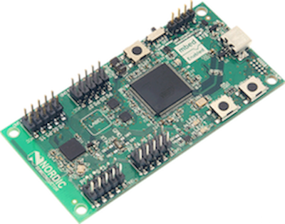
| Price | $39.00 |
| Processor | ARM Cortex M0 |
| Storage | Flash: 128kB RAM: 16 kB |
| Power Usage | 2.7 mW BLE |
| Connectivity | BLE |
| Sensor Capabilities | 32 GPIO SPI/UART/I2C |
Software
| Device | Mobile | Webapp |
 |
||
|
BLE Stack: S130 SoftDevice IDE: Seggar Embedded Studios |
OS: Android IDE: Android Studio |
Server: AWS Web Framework: Django Database: MySQL |
Data Transfer Protocols
| Nordic/ Mobile Device → BLE | Mobile Device/ Web Server → HTTP |
| 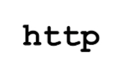 |
How does Little Brother work?
An overview of the system architecture
How do you use Little Brother?
Just four actions:
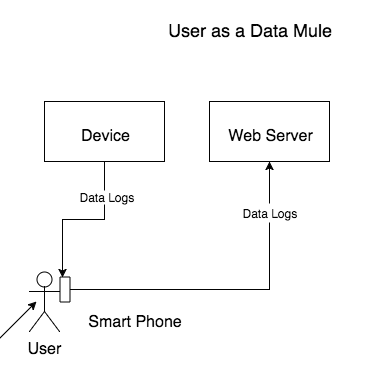
Just by walking by a Little Brother device, a user with the
Little Brother application will act as passive data mule when
near the device
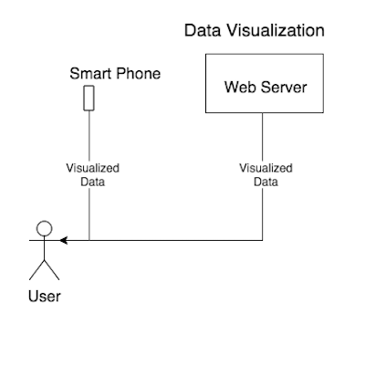
Any user can see the data and the visualizations of the data
collected by the Little Brother devices by going to the
Little Brother Webapp.
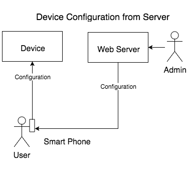
Registered user can make changes to configurations, such as
data collection rates and sensor details, through
the Little Brother Webapp.
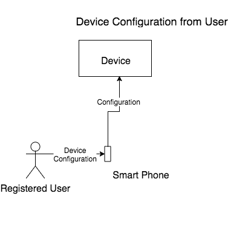
If there are configuration changes to be made for a device,
once a user is in range of the device, the mobile application
sends the new configuration file
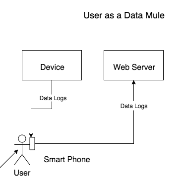
Just by walking by a Little Brother device, a user with the Little Brother application will act as passive data mule when near the device
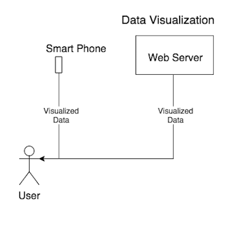
Any user can see the data and the visualizations of the data
collected by the Little Brother devices by going to the
Little Brother Webapp.
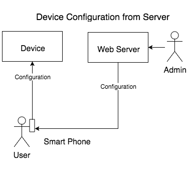
Registered user can make changes to configurations, such as data collection rates and sensor details, through the Little Brother Webapp.
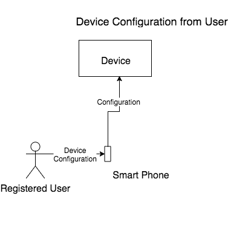
If there are configuration changes to be made for a device, once a user is in range of the device, the mobile application sends the new configuration file
Functional Requirements:
- The device will use sensors to convert physical analog data from the environment to data logs to be stored in the device’s persistent storage
- Data that is collected on the device is encrypted, and sent to a user’s phone to be data muled to the web server
- The web server converts analyzed data to visual data that can be view via the phone, or web application
Security Requirements:
- The data acquired from the device and communication to the device will be encrypted to address any security concerns.
- Any communication with the server will also be encrypted.
Privacy Requirements:
- The data acquired from individuals will be safe and completely anonymous to address any concerns to privacy
Reliability Requirements:
- No data will be lost regardless of any disconnection of communication between the device and the phone, and the phone and the server
The Competition
(and why they aren't)
| Air Quality Egg | Sensoro Yunzi | mCrowd |
| 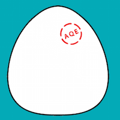 |
Air Quality Egg
The focus of this device is the crowdsourcing of air sensors in order to create a more accurate reading of the air quality at the local level.The difference between Little Brother and Air Quality Egg is the need for constant power and internet connection. Little brother provides the same service of the egg while allowing the flexibility of a battery powered device provides.
Sensoro Yunzi
Sensoro Yunzi is a BLE beacon with integrated sensors such as accelerometers and ambient light that is designed to provide a clear picture to the user about the sensors surroundings. Although little brother provides localized information to its users, its main function is the transmission of data through data muling to a central server for future analysis. Sensoro does not provide this information, since it deletes its readings after 5 time interval readings.
mCrowd:
mCrowd is a software platform created at UMass with the
objective of crowdsourcing ambient data
by utilizing users smart phones as sensors and then sending
this data to a central server for analysis. Granted that
mCrowd and Little Brother do tackle the lack of data problem,
mCrowds methods are limited. The sensors
available on a smartphone are fixed meaning they cannot
modify their collection to detect air pollution or dust,
which little brother specializes in.
-----------------------